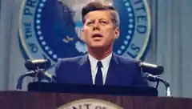

JFK Assassination
What do the official records actually establish—and where did later investigations disagree?

Was there a wider conspiracy?
Many conspiracy theories have proposed that people or organizations beyond Lee Harvey Oswald were involved. ORYNT treats these as claims to test against documented evidence, not as established facts.
Two major U.S. investigations reached different conclusions
The Warren Commission was established in November 1963 and reported in September 1964. Its records are preserved by the U.S. National Archives. citeturn0search0turn0search1
The House Select Committee on Assassinations reopened the investigation in 1976. Its 1979 report said Lee Harvey Oswald fired the shots that struck Kennedy, while also stating that the available evidence led the committee to believe Kennedy was probably assassinated as a result of a conspiracy. It could not identify another gunman or the extent of such a conspiracy. citeturn0search2turn0search3
“Probably a conspiracy” did not identify who was responsible
The 1979 committee's conclusion did not establish the identity of another gunman or a specific organization behind an alleged conspiracy. The same findings said the committee found no official involvement by the Secret Service, FBI or CIA. citeturn0search3
A useful way to read the case
| Question | What the record supports |
|---|---|
| Did Oswald fire shots? | The 1979 House committee concluded that Oswald fired three shots and that the second and third struck Kennedy. citeturn0search2 |
| Did the 1979 committee believe conspiracy was possible? | Yes. It said Kennedy was probably assassinated as a result of a conspiracy, but it could not identify the other gunman or the extent of the conspiracy. citeturn0search3 |
| Does that prove a specific popular conspiracy theory? | No. A general finding about a possible conspiracy does not by itself establish any particular suspect, organization or motive. |
Bottom line
The historical record contains both the Warren Commission investigation and a later congressional investigation that disagreed on the likelihood of a conspiracy. A careful account should preserve that distinction rather than presenting either a conspiracy theory or a single official conclusion as the whole story.
Sources
- U.S. National Archives — JFK Assassination Records Collection. citeturn0search0turn0search1
- U.S. National Archives — House Select Committee on Assassinations report. citeturn0search2turn0search3
- Wikimedia Commons — JFK public-domain portrait. citeturn1search0